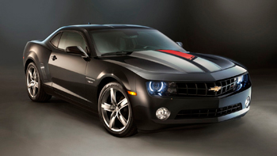
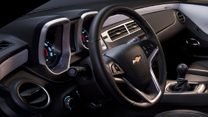

<!DOCTYPE html>
<html>

<head>
	<meta charset="utf-8"/>
	<title>Zoom Images Part 1</title>
	<script type="text/javascript" src="js/jquery-3.7.1.min.js"></script>
	<style type="text/css">
		body {
			background-color: #eeeeff;
		}
		div#smallImage {
			width: 350px;
			height: 197px;
			position: absolute;
			top: 20px;
			left: 20px;
			border:1px solid #000000;
		}
		div#largeImage {
			width: 350px;
			height: 302px;
			position: absolute;
			top: 20px;
			left: 420px;
			border: 1px solid #000000;
			overflow: hidden;
		}
		div#thumb1 {
			width: 170px;
			height: 96px;
			position: absolute;
			top: 225px;
			left: 20px;
			border: 1px solid #000000;
		}
		div#thumb2 {
			width: 170px;
			height: 96px;
			position: absolute;
			top: 225px;
			left: 200px;
			border: 1px solid #000000;
		}
	</style>
</head>
	
<body>
	
	<div id="smallImage"></div>
	<div id="thumb1"></div>
	<div id="thumb2"></div>
	
	<div id="largeImage"></div>
	
	<script type="text/javascript"><!--
			$(document).ready(function(e) {
				//load smallImage
				$("#smallImage").html("");
				//load thumb1
				$("#thumb1").html("");
				//load thumb2
				$("#thumb2").html("");
			
				//if thumb1 is clicked, move it to smallImage and move smallImage pic to thumb1
				$("#thumb1").click(function() {
					var temp = $("#smallImage").html(); //get current smallImage value
					
					$("#smallImage").html( $("#thumb1").html() ); //store thumb1 value into smallImage
					$("#smallImage").children().width(350);       //set image width to 350
					$("#smallImage").children().height(197);      //set image height to 197
					
					$("#thumb1").html( temp );          //store temporary value in thumb1
					$("#thumb1").children().width(170); //set image width to 170
					$("#thumb1").children().height(96); //set image height to 96
				}); //end thumb1 click function
			
				//if thumb2 is clicked, move it to smallImage and move smallImage pic to thumb2
				$("#thumb2").click(function(e) {
					var temp = $("#smallImage").html(); //get current smallImage value
					
					$("#smallImage").html( $("#thumb2").html() ); //store thumb2 value into smallImage
					$("#smallImage").children().width(350);       //set image width to 350
					$("#smallImage").children().height(197);      //set image height to 197
					
					$("#thumb2").html( temp );          //store temporary value in thumb2
					$("#thumb2").children().width(170); //set image width to 170
					$("#thumb2").children().height(96); //set image height to 96
				}); //end thumb1 click function
			
				//when hovering over smallImage
				$("#smallImage").hover(function() {
					$("#largeImage").html( $("#smallImage").html() );
					$("#largeImage").children().css("position", "absolute");
					$("#largeImage").children().css("left", "0");
					$("#largeImage").children().css("top", "0");
					
					var imgLocation = $("#largeImage").children().attr("src");
					var slashLocation = imgLocation.lastIndexOf("/");
					var imgName = imgLocation.substring(slashLocation+1);
					
					$("#largeImage").children().width(1600);
					$("#largeImage").children().height(900);
					$("#largeImage").children().attr("src", "zoomImages/"+imgName);
				}, function() {
					$("#largeImage").html("");
				}); //end hovering over smallImage
			
				//smallImage size is 350 x 197
				//largeImage size is 1600 x 900
				//top left corner of smallImage is 20, 20
				//top left corner of largeImage is 420, 20
				//difference in size is 21.8% (350/1600 = 21.8%)
				//if x coord of cursor is 120, which is 100 inside the image
				//100 * 1600 / 350 = 457.14px
				$("#smallImage").mousemove(function(event) {
					//result of both x,y needs to be the center of largeImage
					//largeImage is 350 x 302px
					//center of largeImage would be (175 x 151) or 420+175 and 20+151
					xLoc = ( (event.pageX-20) * 1600) / 350;
					yLoc = ( (event.pageY-20) * 900) / 197;
					
					//move the largeImage around based on the location of the mouse over the smallImage
					//X-AXIS
					
					//first, don't let it scroll off the left
					if(xLoc < 195)
						$("#largeImage").children().css("left", "0");
					//second, don't let it scroll off the right
					else if(xLoc > 1415)
						$("#largeImage").children().css("left", (-1)*(1250));
					//third, match up adjusted x value with center of the largeImage div
					else if(xLoc > 195)
						$("#largeImage").children().css("left", (-1)*(xLoc-175));
					
					//Y-AXIS
					if(yLoc < 171)
						$("#largeImage").children().css("top", "0");
					else if(yLoc > 750)
						$("#largeImage").children().css("top", (-1)*(598));
					else if(yLoc > 171)
						$("#largeImage").chilren().css("top", (-1)*(yLoc-151));
					
				}); //end mousemove
				
		}); //end document ready
	
	--></script>
	
</body>
	
</html>